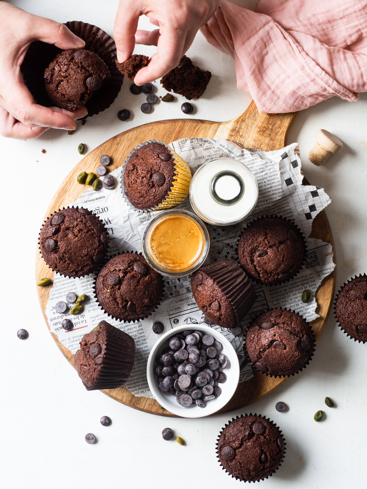

Chocolate Muffin

These tasty chocolate muffins are scrumptious! Yogurt in the batter keeps them super moist while cocoa powder and chocolate chips add a huge dose of chocolaty goodness. They're even better the next day.
Wake up on the right side of the bed with this chocolate muffin recipe, made incredibly moist by carefully chosen ingredients. Bake the best chocolate muffins of your life with this top-rated recipe. You might already have everything you need to make these moist chocolate muffins on hand.
Ingredients
- Flour
- Sugar
- Cocoa Powder and Chocolate Chips
- Baking Soda
- Yogurt
- Milk
- Oil
- Egg
- Vanilla
Directions
- Gather ingredients
- Preheat the oven to 400 degrees F (200 degrees C). Line 12 muffin cups with paper muffin liners.
- Combine flour, sugar, 3/4 cup chocolate chips, cocoa powder, and baking soda in a large bowl.
- Whisk yogurt, milk, oil, egg, and vanilla in separate bowl until smooth.
- Pour yogurt mixture into the chocolate mixture and stir until batter is just blended.
- Fill prepared muffin cups 3/4 full and sprinkle with remaining 1/4 cup chocolate chips.
- Bake in the preheated oven until a toothpick inserted in the center comes out clean, about 20 minutes. Cool in the pans for 10 minutes before removing to cool completely on a wire rack.